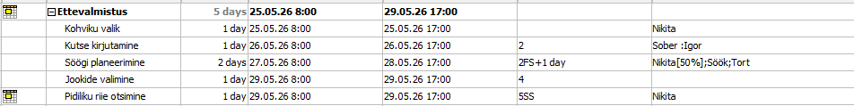
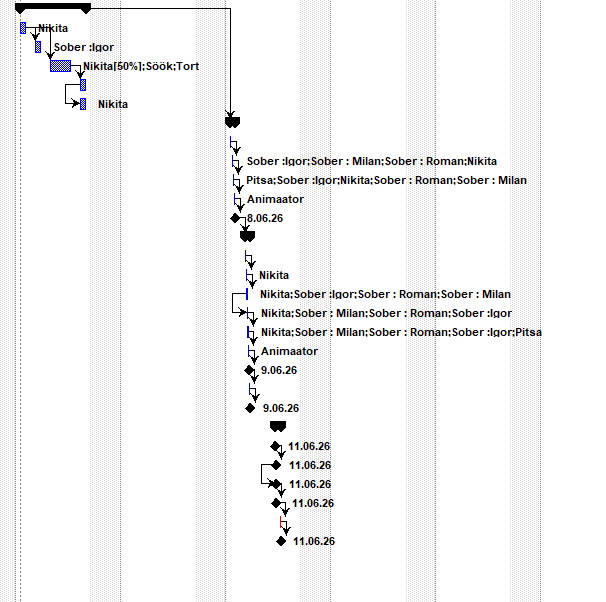
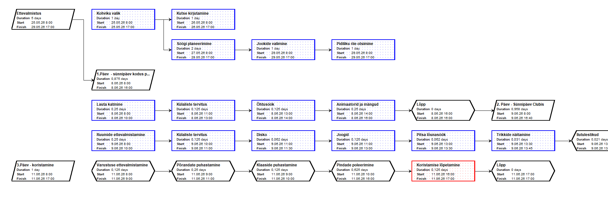
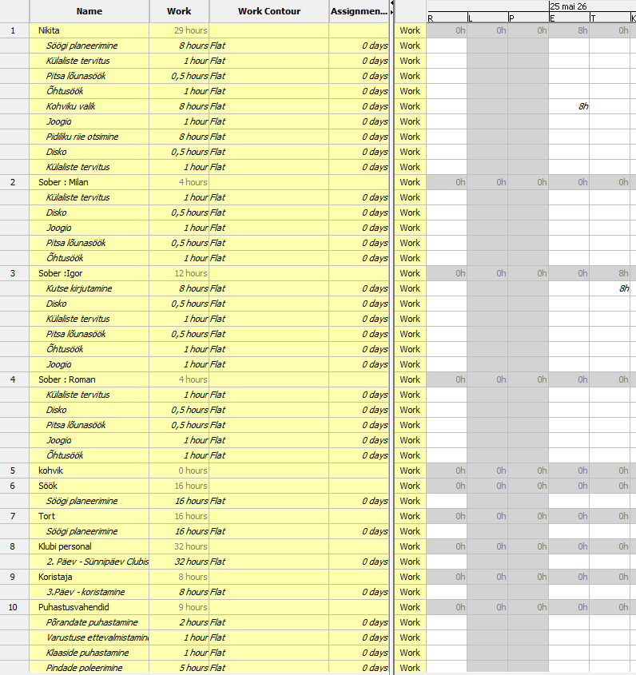

Diagrammitüübid ProjectLibres
- Gantt Chart (Gantti diagramm) – näitab ülesannete kestust ja nende sõltuvusi ajaskaalal.
- Network Diagram (Võrgustiku diagramm) – kuvab ülesandeid ja nende järjekorda nooledega, kasulik kriitilise tee jälgimiseks.
- Resource Usage / Resource Sheet (Ressursside tabelid) – tabelid, mis näitavad ressursside (inimesed, seadmed) jaotust. Otse graafikuid ei kuvata.
1. Gantt Chart loomine
- Avage ProjectLibre ja looge uus projekt (File → New).
- Lisage ülesanded: Task Name ja Duration (näiteks 5d).

- Määrake sõltuvused: Predecessors veerg või Link Tasks nupp.
- Diagramm kuvatakse automaatselt paremal (Gantt Chart).

2. Network Diagram loomine
- Valige menüüst View → Network Diagram.
- Diagrammil kuvatakse ülesanded plokkidena ja sõltuvused nooledega.
- Kasutatakse ülesannete järjestuse ja kriitilise tee jälgimiseks.

3. Ressursside jälgimine
- Menüü View → Resource Sheet – ressursside tabel.
- Menüü View → Resource Usage – tabel, kus näete, milliseid ressursse ülesanded kasutavad.
- Otse graafikuid ProjectLibre ei loo; graafikud saab teha, eksportides andmed Excelisse.

Kokkuvõte
ProjectLibre võimaldab visualiseerida ülesannete ajaraame (Gantt Chart) ja ülesannete vahelisi seoseid (Network Diagram), samuti jälgida ressursside tabelit. Graafikute ja diagrammide loomiseks, nagu Excelis, tuleb andmed eksportida.